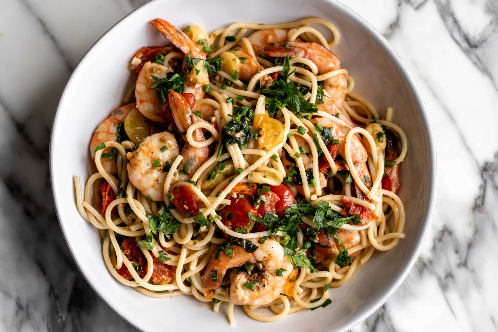

Home
Simple Shrimp Scampi

A Taste of the Coast: Simple Shrimp Scampi
This classic Shrimp Scampi is a quick and easy dish that's perfect for a
weeknight meal. Juicy shrimp are sautéed with garlic, butter, white wine,
and lemon for a burst of Mediterranean flavor. Serve it over pasta, with
crusty bread for dipping, or as an appetizer.
Ingredients:
- 1 pound large shrimp, peeled and deveined
- 4 tablespoons butter
- 4 cloves garlic, minced
- 1/4 cup dry white wine
- 1/4 cup chopped fresh parsley
- 2 tablespoons lemon juice
- Salt and pepper to taste
Instructions:
- Season shrimp with salt and pepper.
- Melt butter in a large skillet over medium heat.
- Add garlic and cook until fragrant, about 1 minute.
-
Add shrimp to the skillet and cook for 2-3 minutes per side, or until
pink and cooked through.
-
Add white wine to the skillet and cook for 1 minute, or until the wine
has reduced slightly.
- Stir in parsley and lemon juice.
- Season with salt and pepper to taste.
- Enjoy!